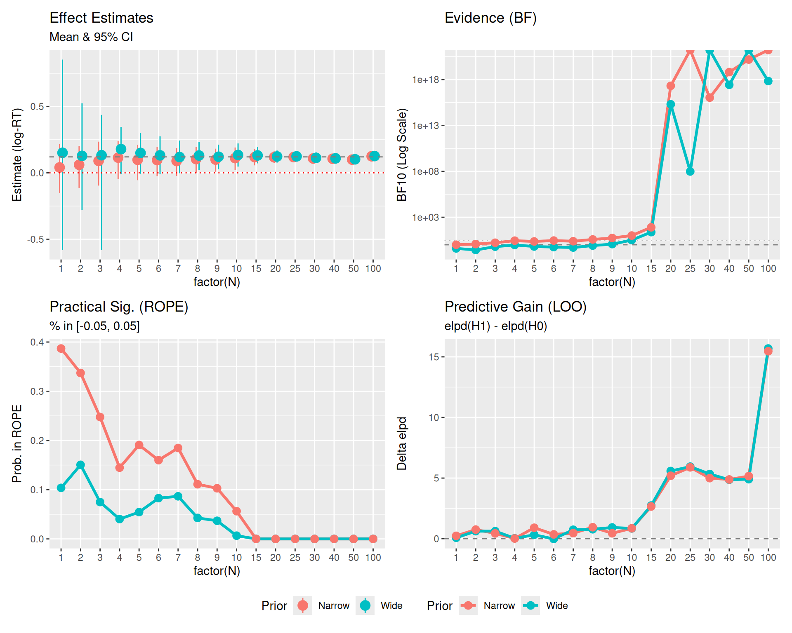
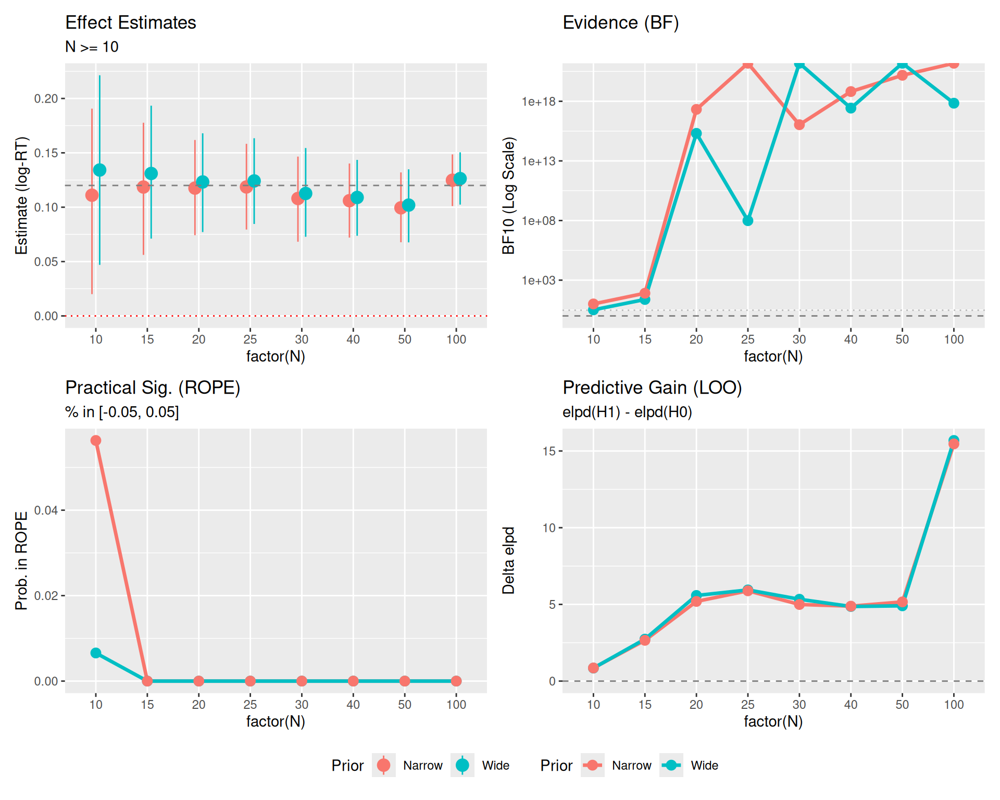
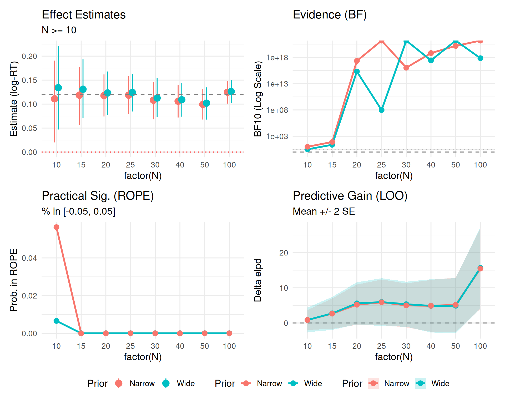
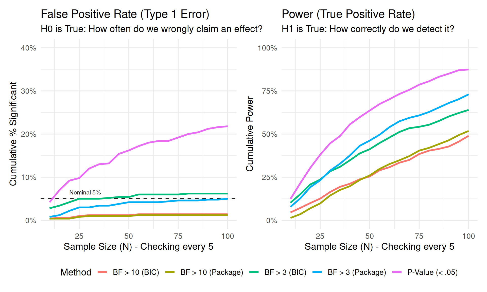
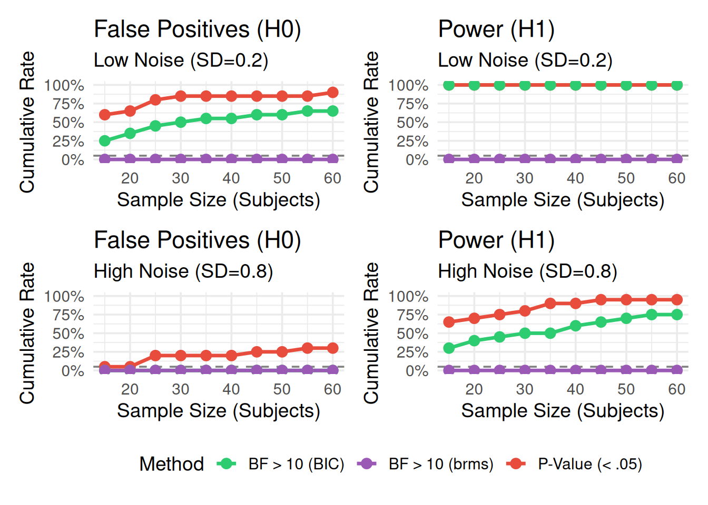

Show code
library(brms)
library(tidyverse)
library(bayesplot)
library(posterior)
library(bayestestR)
library(emmeans)
library(marginaleffects)
library(patchwork)
library(tidybayes)
theme_set(theme_minimal(base_size = 14))Understanding Divergences in Bayesian Decision Making
In this specific example, we will simulate a scenario where we collect data sequentially (\(N=20, 50, 100\)) and track how three different Bayesian decision metrics behave:
We will also see how prior width affects the Bayes Factor but has less impact on ROPE and LOO (once N is moderate).
library(brms)
library(tidyverse)
library(bayesplot)
library(posterior)
library(bayestestR)
library(emmeans)
library(marginaleffects)
library(patchwork)
library(tidybayes)
theme_set(theme_minimal(base_size = 14))We generate data where there is a small but real effect (\(d \approx 0.2\)). This is the “danger zone” where decision criteria often disagree.
set.seed(2025) # Fixed seed for reproducibility
# Function to generate data
# n represents number of subjects here
generate_data <- function(n_subj) {
n_item <- 10 # Number of items (kept small for efficiency)
expand_grid(
subject = factor(1:n_subj),
item = factor(1:n_item),
condition = factor(c("A", "B"))
) %>%
# Add random effects
group_by(subject) %>%
mutate(
subj_intercept = rnorm(1, mean = 0, sd = 0.15),
subj_slope = rnorm(1, mean = 0, sd = 0.08)
) %>%
group_by(item) %>%
mutate(
item_intercept = rnorm(1, mean = 0, sd = 0.10)
) %>%
ungroup() %>%
# Generate log-RT
mutate(
condition_effect = if_else(condition == "B", 0.12, 0), # 12% slower (effect size)
log_rt = 6.0 + # baseline ≈ 400ms (log scale)
subj_intercept +
item_intercept +
condition_effect +
(condition == "B") * subj_slope +
rnorm(n(), mean = 0, sd = 0.20), # residual noise
# Map log_rt to y for compatibility
y = log_rt
) %>%
select(subject, item, condition, y)
}We will loop through sample sizes \(N = \{20, 50, 100\}\). At each step, we fit three models:
y ~ 1y ~ condition, prior normal(0, 5)y ~ condition, prior normal(0, 0.2)# Sample sizes (Number of subjects)
# Sample sizes (Number of subjects)
sample_sizes <- c(1:10, seq(15, 30, 5), 40, 50, 100)
results_list <- list()
# Ensure models directory exists
dir.create("models", showWarnings = FALSE)
# Generate the full dataset once (Sequential design: N=20 contains N=10)
max_n <- max(sample_sizes)
data_full <- generate_data(max_n)
for (n in sample_sizes) {
# 1. Subset Data (Cumulative/Sequential)
data_n <- data_full %>%
filter(as.integer(subject) <= n) %>%
droplevels()
# 2. Fit Models
# Using mixed-effects models to match data structure
# H0: Null model (no fixed condition effect, but allowing random slopes)
fit_null <- brm(
y ~ 1 + (1 + condition | subject) + (1 | item),
data = data_n,
prior = c(
prior(normal(6, 0.5), class = Intercept), # Centered around 6 (log-RT)
prior(exponential(2), class = sd),
prior(exponential(2), class = sigma),
prior(lkj(2), class = cor)
),
file = paste0("models/fit_null_N", n),
silent = 2, refresh = 0, seed = 123
)
# H1 Wide: Wide prior on slope
fit_wide <- brm(
y ~ condition + (1 + condition | subject) + (1 | item),
data = data_n,
prior = c(
prior(normal(6, 0.5), class = Intercept),
prior(normal(0, 1.0), class = b), # Wide for log scale
prior(exponential(2), class = sd),
prior(exponential(2), class = sigma),
prior(lkj(2), class = cor)
),
sample_prior = "yes", # Needed for Bayes Factor
file = paste0("models/fit_wide_N", n),
silent = 2, refresh = 0, seed = 123
)
# H1 Narrow: Narrow prior on slope (informed by expected effect size)
fit_narrow <- brm(
y ~ condition + (1 + condition | subject) + (1 | item),
data = data_n,
prior = c(
prior(normal(6, 0.5), class = Intercept),
prior(normal(0, 0.1), class = b), # Narrow (around 0.12)
prior(exponential(2), class = sd),
prior(exponential(2), class = sigma),
prior(lkj(2), class = cor)
),
sample_prior = "yes",
file = paste0("models/fit_narrow_N", n),
silent = 2, refresh = 0, seed = 123
)
# 3. Compute Metrics
# --- ROPE ---
# ROPE range [-0.05, 0.05] (approx 5% change, suitable for log-RT practical significance)
# For Narrow Model
rope_res_narrow <- rope(fit_narrow, range = c(-0.05, 0.05), ci = 0.95)
rope_pct_in_narrow <- rope_res_narrow$ROPE_Percentage[2] # conditionB
# For Wide Model
rope_res_wide <- rope(fit_wide, range = c(-0.05, 0.05), ci = 0.95)
rope_pct_in_wide <- rope_res_wide$ROPE_Percentage[2] # conditionB
# --- Bayes Factor (Savage-Dickey) ---
# For Wide Model
bf_wide <- hypothesis(fit_wide, "conditionB = 0")
bf_val_wide <- 1 / bf_wide$hypothesis$Evid.Ratio # BF10 (evidence FOR effect)
# For Narrow Model
bf_narrow <- hypothesis(fit_narrow, "conditionB = 0")
bf_val_narrow <- 1 / bf_narrow$hypothesis$Evid.Ratio # BF10
# --- LOO ---
loo_null <- loo(fit_null)
loo_wide <- loo(fit_wide)
loo_narrow <- loo(fit_narrow)
# elpd_gain: elpd(H1) - elpd(H0)
# We use loo_compare to get the difference and the SE of the difference
comp_wide <- loo_compare(loo_wide, loo_null)
# Extract difference where model is "fit_wide" (row 1 is better model, need to match name)
# loo_compare output has rownames like "model1", "model2" corresponding to input order?
# Safer: loo_compare(x, y) returns diff relative to best.
# Simpler: The difference object from loo_compare(list(H1=loo_wide, H0=loo_null))
# Manual diff (consistent with previous) + SE estimation
# SE of diff = sqrt(n * var(pointwise_diff))
diff_wide <- loo_wide$pointwise[,"elpd_loo"] - loo_null$pointwise[,"elpd_loo"]
elpd_gain_wide <- sum(diff_wide)
elpd_se_wide <- sqrt(length(diff_wide) * var(diff_wide))
diff_narrow <- loo_narrow$pointwise[,"elpd_loo"] - loo_null$pointwise[,"elpd_loo"]
elpd_gain_narrow <- sum(diff_narrow)
elpd_se_narrow <- sqrt(length(diff_narrow) * var(diff_narrow))
# --- Posterior Estimates (with 95% CIs) ---
est_narrow <- fixef(fit_narrow, probs = c(0.025, 0.975))["conditionB", ]
est_wide <- fixef(fit_wide, probs = c(0.025, 0.975))["conditionB", ]
# Store
results_list[[paste0("N", n)]] <- tibble(
N = n,
# Estimates
Est_Narrow = est_narrow["Estimate"],
Low_Narrow = est_narrow["Q2.5"],
High_Narrow = est_narrow["Q97.5"],
Est_Wide = est_wide["Estimate"],
Low_Wide = est_wide["Q2.5"],
High_Wide = est_wide["Q97.5"],
# Metrics
ROPE_in_prob_Wide = rope_pct_in_wide,
ROPE_in_prob_Narrow = rope_pct_in_narrow,
BF10_Wide = bf_val_wide,
BF10_Narrow = as.numeric(bf_val_narrow),
LOO_gain_Wide = as.numeric(elpd_gain_wide),
LOO_se_Wide = as.numeric(elpd_se_wide),
LOO_gain_Narrow = as.numeric(elpd_gain_narrow),
LOO_se_Narrow = as.numeric(elpd_se_narrow)
)
}
results_df <- bind_rows(results_list)results_df %>%
pivot_longer(
cols = -N,
names_to = c("Metric", "Prior"),
names_pattern = "(.*)_(Narrow|Wide)"
) %>%
pivot_wider(names_from = Metric, values_from = value) %>%
mutate(
Estimate_CI = sprintf("%.2f [%.2f, %.2f]", Est, Low, High)
) %>%
select(N, Prior, Estimate_CI, BF10, ROPE_Prob = ROPE_in_prob, LOO_Gain = LOO_gain) %>%
arrange(N, desc(Prior)) %>%
knitr::kable(digits = 3, caption = "Comparison of Decision Metrics by Sample Size and Prior Sensitivity")| N | Prior | Estimate_CI | BF10 | ROPE_Prob | LOO_Gain |
|---|---|---|---|---|---|
| 10 | Wide | 0.17 [0.08, 0.25] | 1.003400e+01 | 0.000 | 1.318 |
| 10 | Narrow | 0.14 [0.05, 0.22] | 2.778000e+01 | 0.000 | 1.596 |
| 20 | Wide | 0.13 [0.05, 0.20] | 5.132000e+00 | 0.000 | 1.282 |
| 20 | Narrow | 0.11 [0.04, 0.19] | 3.622400e+01 | 0.026 | 0.893 |
| 50 | Wide | 0.13 [0.10, 0.16] | 7.450869e+92 | 0.000 | 13.583 |
| 50 | Narrow | 0.12 [0.10, 0.15] | 4.183176e+15 | 0.000 | 13.620 |
Let’s visualize how these metrics evolve as N increases.
# 1. Estimates Data
plot_est <- results_df %>%
select(N, starts_with("Est"), starts_with("Low"), starts_with("High")) %>%
pivot_longer(
cols = -N,
names_to = c("Type", "Prior"),
names_sep = "_"
) %>%
pivot_wider(names_from = Type, values_from = value)
# 2. Metrics Data
plot_metrics <- results_df %>%
select(N, contains("BF10"), contains("ROPE"), contains("LOO")) %>%
pivot_longer(
cols = -N,
names_to = c("MetricType", "Prior"),
names_pattern = "(.*)_(Wide|Narrow)",
values_to = "Value"
)
# Plot 0: Estimates
p0 <- ggplot(plot_est, aes(x = factor(N), y = Est, color = Prior, group = Prior)) +
geom_pointrange(aes(ymin = Low, ymax = High), position = position_dodge(width = 0.3), size = 0.8) +
geom_hline(yintercept = 0.12, linetype = "dashed", color = "gray50") + # True effect
geom_hline(yintercept = 0, linetype = "dotted", color = "red") +
labs(title = "Effect Estimates", subtitle = "Mean & 95% CI", y = "Estimate (log-RT)") +
theme(legend.position = "bottom")
# Plot 1: Bayes Factors
p1 <- plot_metrics %>%
filter(MetricType == "BF10") %>%
ggplot(aes(x = factor(N), y = Value, color = Prior, group = Prior)) +
geom_hline(yintercept = 1, linetype = "dashed", color = "gray50") +
geom_hline(yintercept = 3, linetype = "dotted", color = "gray50", alpha=0.5) +
geom_line(size = 1.2) +
geom_point(size = 3) +
scale_y_log10() +
labs(title = "Evidence (BF)", y = "BF10 (Log Scale)")
# Plot 2: ROPE
p2 <- plot_metrics %>%
filter(MetricType == "ROPE_in_prob") %>%
ggplot(aes(x = factor(N), y = Value, color = Prior, group = Prior)) +
geom_line(size = 1.2) +
geom_point(size = 3) +
labs(title = "Practical Sig. (ROPE)",
subtitle = "% in [-0.05, 0.05]",
y = "Prob. in ROPE")
# ylim removed for dynamic scaling
# Plot 3: LOO Prediction
p3 <- plot_metrics %>%
filter(MetricType == "LOO_gain") %>%
ggplot(aes(x = factor(N), y = Value, color = Prior, group = Prior)) +
geom_hline(yintercept = 0, linetype = "dashed", color = "gray50") +
geom_line(size = 1.2) +
geom_point(size = 3) +
labs(title = "Predictive Gain (LOO)",
subtitle = "elpd(H1) - elpd(H0)",
y = "Delta elpd")
(p0 + p1 + p2 + p3) +
plot_layout(guides = "collect") & theme(legend.position = "bottom")
Here is the same plot, but filtering out the very small sample sizes (N < 10) to focus on the stability and convergence of the metrics.
# Filter data
plot_est_zoom <- plot_est %>% filter(N >= 10)
plot_metrics_zoom <- plot_metrics %>% filter(N >= 10)
# Re-create plots with filtered data
p0_z <- ggplot(plot_est_zoom, aes(x = factor(N), y = Est, color = Prior, group = Prior)) +
geom_pointrange(aes(ymin = Low, ymax = High), position = position_dodge(width = 0.3), size = 0.8) +
geom_hline(yintercept = 0.12, linetype = "dashed", color = "gray50") +
geom_hline(yintercept = 0, linetype = "dotted", color = "red") +
labs(title = "Effect Estimates", subtitle = "N >= 10", y = "Estimate (log-RT)") +
theme(legend.position = "bottom")
p1_z <- plot_metrics_zoom %>% filter(MetricType == "BF10") %>%
ggplot(aes(x = factor(N), y = Value, color = Prior, group = Prior)) +
geom_hline(yintercept = 1, linetype = "dashed", color = "gray50") +
geom_hline(yintercept = 3, linetype = "dotted", color = "gray50", alpha=0.5) +
geom_line(size = 1.2) + geom_point(size = 3) + scale_y_log10() +
labs(title = "Evidence (BF)", y = "BF10 (Log Scale)")
p2_z <- plot_metrics_zoom %>% filter(MetricType == "ROPE_in_prob") %>%
ggplot(aes(x = factor(N), y = Value, color = Prior, group = Prior)) +
geom_line(size = 1.2) + geom_point(size = 3) +
labs(title = "Practical Sig. (ROPE)", subtitle = "% in [-0.05, 0.05]", y = "Prob. in ROPE")
p3_z <- plot_metrics_zoom %>% filter(MetricType == "LOO_gain") %>%
ggplot(aes(x = factor(N), y = Value, color = Prior, group = Prior)) +
geom_hline(yintercept = 0, linetype = "dashed", color = "gray50") +
geom_line(size = 1.2) + geom_point(size = 3) +
labs(title = "Predictive Gain (LOO)", subtitle = "elpd(H1) - elpd(H0)", y = "Delta elpd")
(p0_z + p1_z + p2_z + p3_z) +
plot_layout(guides = "collect") & theme(legend.position = "bottom")
Plot Reference Lines: * Red Dotted Line (\(y=0\)): Represents the Null Hypothesis (no effect). * Gray Dashed Line (\(y=0.12\)): Represents the True Effect Size used in data generation. * Gray Dashed/Dotted Lines (BF Panel): Thresholds for evidence (\(BF=1\) is neutral, \(BF=3\) is moderate evidence).
This third version includes uncertainty bounds where readily available (specifically for LOO).
# Create specific LOO data frame with SE
plot_loo_unc <- results_df %>%
filter(N >= 10) %>%
select(N, LOO_gain_Wide, LOO_se_Wide, LOO_gain_Narrow, LOO_se_Narrow) %>%
pivot_longer(
cols = -N,
names_to = c(".value", "Prior"),
names_pattern = "LOO_(.*)_(Wide|Narrow)"
) %>% # Creates N, Prior, gain, se
mutate(
Low = gain - 2*se,
High = gain + 2*se
)
# New LOO Plot with SE
p3_unc <- ggplot(plot_loo_unc, aes(x = factor(N), y = gain, color = Prior, group = Prior)) +
geom_hline(yintercept = 0, linetype = "dashed", color = "gray50") +
geom_ribbon(aes(ymin = Low, ymax = High, fill = Prior), alpha = 0.2, color = NA) +
geom_line(size = 1.2) +
geom_point(size = 3) +
labs(title = "Predictive Gain (LOO)", subtitle = "Mean +/- 2 SE", y = "Delta elpd")
(p0_z + p1_z + p2_z + p3_unc) +
plot_layout(guides = "collect") & theme(legend.position = "bottom")
2 * SE represent?In the LOO plots above, we visualized the difference in expected log predictive density (elpd_diff) along with its standard error (se_diff).
If the 2 * SE band crosses the zero line (dashed), it means we cannot statistically distinguish the predictive performance of the two models. * Even if the mean difference is positive (suggesting \(H_1\) is better), the uncertainty is large enough that the difference could arguably be due to noise. * In the plot, you might see the bands overlapping 0 for smaller sample sizes, indicating that we don’t yet have enough data to confidently claim the “effect” model predicts better than the null.
You might expect the error bars to shrink as \(N\) increases (like standard errors of mean estimates, which scale as \(1/\sqrt{N}\)). However, for ELPD, the standard error typically grows or stays constant. * Reason: ELPD is a sum over all \(N\) data points, not an average. * \(ELPD = \sum_{i=1}^N \log p(y_i | y_{-i})\) * As you calculate a sum over more items, the total uncertainty accumulates. * The signal (difference in ELPD) scales with \(N\). * The noise (SE of the difference) scales roughly with \(\sqrt{N}\). * Result: The relative error shrinks (the signal-to-noise ratio improves), but the absolute width of the 2 * SE band on the plot will actually expand as \(N\) grows. This is a feature of summing predictive densities, not a bug.
Instead of using LOO solely for model selection (picking the single “best” model), a more robust Bayesian approach is model averaging or stacking.
Bayesian Stacking combines the posterior predictive distributions of multiple models using weights (\(w_k\)) that maximize the leave-one-out predictive density of the combined distribution. This avoids the “all-or-nothing” decision of selection and preserves uncertainty across models.
You might notice that Bayes Factors (\(BF_{10}\)) and Posterior Estimates (95% CI) often scream “Effect!” (BF > 100, CI excludes 0) while LOO remains cautious (bands crossing 0 or small gains). This is not a contradiction; they are asking different questions.
Here is a quick reference for interpreting the values from the plots above.
Evidence for the Alternative Hypothesis (\(H_1\)) over the Null (\(H_0\)).
| \(BF_{10}\) Value | Strength of Evidence |
|---|---|
| 1 - 3 | Anecdotal (Barely worth mentioning) |
| 3 - 10 | Moderate |
| 10 - 30 | Strong |
| > 30 | Very Strong |
elpd_diff)Predictive performance difference. Ratio = |elpd_diff| / se_diff.
elpd_diff |
Ratio | Interpretation | Action |
|---|---|---|---|
| < 4 | < 2 | Equivalent models | Pick simpler model (Occam’s razor) |
| 4 - 10 | 2 - 4 | Moderate difference | Consider model with larger elpd |
| > 10 | > 4 | Clear winner | Prefer model with larger elpd |
Based on the 95% Highest Density Interval (HDI) of the posterior distribution relative to the ROPE (e.g., \([-0.05, 0.05]\)).
> Note: The ROPE Probability plot shows what % of the posterior is inside the ROPE. A value of ~10-20% usually corresponds to the “Undecided” or “Reject H0” cases depending on where the bulk of the density lies.
Estimate of the effect size (log-RT difference) with uncertainty.
A key advantage of Bayesian methods is their robustness to Optional Stopping—the practice of checking your results as data comes in and deciding whether to stop or continue collecting data.
The reason Bayesian methods handle optional stopping gracefully is the Likelihood Principle: All the evidence from the data relevant to model parameters is contained in the likelihood function. In simple terms, the intention of the experimenter does not change the evidence. Whether you planned to stop at \(N=50\) or you just happened to stop there because the result looked good, the data (\(D\)) is the same, and therefore \(P(D|H_0)\) and \(P(D|H_1)\) are the same.
While robust, optional stopping with Bayes Factors is not magic. It relies on: 1. Likelihood Validity: Your model (distribution, noise) must reasonably approximate the data-generating process. 2. Prior Sensitivity: If you use a Prior that is “too wide” (the Dilution Effect seen in our earlier plots), you artificially penalize \(H_1\), making it harder to find evidence for an effect even if it exists. 3. Finite Horizons: In theory, if you sample forever, a Bayes Factor can transiently cross a threshold (e.g., \(BF > 3\)) even if \(H_0\) is true, though the probability of this is much lower than for p-values.
For real experiments, “continuous monitoring” is valid, but structured approaches (Sequential Bayes Factor Design) are best for planning:
We simulate 500 experiments. In each, we collect data sequentially up to \(N=100\), checking the results every 5 subjects.
library(BayesFactor)
run_simulation <- function(n_sim = 500, true_effect = 0) {
# Storage
results <- tibble(
sim_id = integer(),
check_n = integer(),
decision_p = logical(),
decision_bf3_pkg = logical(),
decision_bf3_bic = logical(),
decision_bf10_pkg = logical(),
decision_bf10_bic = logical()
)
for (i in 1:n_sim) {
# Generate full dataset for one simulation (N=100)
# Using simple t-test structure for speed
n_max <- 100
group_A <- rnorm(n_max, mean = 0, sd = 1)
group_B <- rnorm(n_max, mean = true_effect, sd = 1)
# Sequential checks
check_points <- seq(10, n_max, by = 5)
# Track if we have already "stopped" for this sim
stopped_p <- FALSE
stopped_bf3_pkg <- FALSE
stopped_bf3_bic <- FALSE
stopped_bf10_pkg <- FALSE
stopped_bf10_bic <- FALSE
for (n in check_points) {
# Subset data
a <- group_A[1:n]
b <- group_B[1:n]
# Prepare data for BIC calculation
dat <- tibble(
val = c(a, b),
grp = factor(rep(c("A", "B"), each = n))
)
# Tests
# 1. Frequentist T-test
p_val <- t.test(a, b)$p.value
# 2. Bayesian T-test approximation (BIC)
# BF ~= exp((BIC(H0) - BIC(H1)) / 2)
m0 <- lm(val ~ 1, data = dat)
m1 <- lm(val ~ grp, data = dat)
bic0 <- BIC(m0)
bic1 <- BIC(m1)
bf_val_bic <- exp((bic0 - bic1) / 2)
# 3. Bayesian T-test (Package)
bf_obj <- ttestBF(x = b, y = a)
bf_val_pkg <- extractBF(bf_obj)$bf
# Check Decisions
if (!stopped_p && p_val < 0.05) stopped_p <- TRUE
if (!stopped_bf3_pkg && bf_val_pkg > 3) stopped_bf3_pkg <- TRUE
if (!stopped_bf3_bic && bf_val_bic > 3) stopped_bf3_bic <- TRUE
if (!stopped_bf10_pkg && bf_val_pkg > 10) stopped_bf10_pkg <- TRUE
if (!stopped_bf10_bic && bf_val_bic > 10) stopped_bf10_bic <- TRUE
# Record cumulative status
results <- bind_rows(results, tibble(
sim_id = i,
check_n = n,
decision_p = stopped_p,
decision_bf3_pkg = stopped_bf3_pkg,
decision_bf3_bic = stopped_bf3_bic,
decision_bf10_pkg = stopped_bf10_pkg,
decision_bf10_bic = stopped_bf10_bic
))
# Optimization: If all stopped, break inner loop?
# No, mostly visualization wants to see the curve.
}
}
return(results)
}
# Run Simulations (use cached chunk to save time)
set.seed(888)
# H0 True (Type 1 Error Check)
sim_h0 <- run_simulation(n_sim = 500, true_effect = 0) %>%
mutate(Scenario = "H0 True (No Effect)")
# H1 True (Power Check)
sim_h1 <- run_simulation(n_sim = 500, true_effect = 0.4) %>% # d=0.4
mutate(Scenario = "H1 True (Effect d=0.4)")
# Combine
sim_data <- bind_rows(sim_h0, sim_h1)
# Summarize for Plotting
start_n <- 10
sim_summary <- sim_data %>%
group_by(Scenario, check_n) %>%
summarise(
prop_p = mean(decision_p),
prop_bf3_pkg = mean(decision_bf3_pkg),
prop_bf3_bic = mean(decision_bf3_bic),
prop_bf10_pkg = mean(decision_bf10_pkg),
prop_bf10_bic = mean(decision_bf10_bic),
.groups = "drop"
) %>%
pivot_longer(cols = starts_with("prop"), names_to = "Method", values_to = "Rate") %>%
mutate(
Method = case_when(
Method == "prop_p" ~ "P-Value (< .05)",
Method == "prop_bf3_pkg" ~ "BF > 3 (Package)",
Method == "prop_bf3_bic" ~ "BF > 3 (BIC)",
Method == "prop_bf10_pkg" ~ "BF > 10 (Package)",
Method == "prop_bf10_bic" ~ "BF > 10 (BIC)"
)
)# H0 True Plot (False Positive Rate)
p_h0 <- sim_summary %>%
filter(Scenario == "H0 True (No Effect)") %>%
ggplot(aes(x = check_n, y = Rate, color = Method)) +
geom_hline(yintercept = 0.05, linetype = "dashed", color = "black") +
geom_line(size = 1.2) +
scale_y_continuous(labels = scales::percent, limits = c(0, 0.4)) +
labs(
title = "False Positive Rate (Type 1 Error)",
subtitle = "H0 is True: How often do we wrongly claim an effect?",
x = "Sample Size (N) - Checking every 5",
y = "Cumulative % Significant"
) +
annotate("text", x = 20, y = 0.06, label = "Nominal 5%", hjust = 0, vjust = 0, size=3)
# H1 True Plot (Power)
p_h1 <- sim_summary %>%
filter(Scenario == "H1 True (Effect d=0.4)") %>%
ggplot(aes(x = check_n, y = Rate, color = Method)) +
geom_line(size = 1.2) +
scale_y_continuous(labels = scales::percent, limits = c(0, 1)) +
labs(
title = "Power (True Positive Rate)",
subtitle = "H1 is True: How correctly do we detect it?",
x = "Sample Size (N)",
y = "Cumulative Power"
)
p_h0 / p_h1 + plot_layout(guides = "collect") & theme(legend.position = "bottom")
In this second simulation, we replicate the structure of a real psycholinguistic experiment with Subjects and Items. This is computationally expensive, so we run fewer simulations (\(Sims=20\)) but use the appropriate Linear Mixed Models (LMM).
lmer(y ~ cond) vs lmer(y ~ 1).library(lme4)
library(brms)
# 0. Pre-compile brms model (saves C++ compilation time in loop)
# We fit on dummy data once
dat_dummy <- tibble(y = rnorm(10), condition = factor(rep(c("A", "B"), 5)), subject = factor(1:10), item = factor(rep(1:2, 5)))
brm_template <- brm(
y ~ condition + (1|subject) + (1|item),
data = dat_dummy,
chains = 1, iter = 2000, warmup = 1000,
prior = set_prior("normal(0, 1)", class = "b", coef = "conditionB"), # Proper prior for BF
save_pars = save_pars(all = TRUE),
silent = 2, refresh = 0,
backend = "cmdstanr" # Faster if available, falls back to rstan
)
run_lmm_simulation <- function(n_sim = 20, true_effect = 0, noise_sd = 0.2, brm_model = NULL) {
results <- tibble()
for (i in 1:n_sim) {
# Data Generation Parameters
n_param <- 80 # Max subjects
n_item <- 20
# 1. Generate FULL dataset once (to ensure consistent Subject/Item effects)
dat_full <- expand_grid(
subject = factor(1:n_param),
item = factor(1:n_item),
condition = factor(c("A", "B"))
) %>%
mutate(
# Random Effects
subj_int = rep(rnorm(n_param, 0, 0.15), each = n_item * 2),
item_int = rep(rnorm(n_item, 0, 0.1), times = n_param * 2), # approx
# Noise
err = rnorm(n(), 0, noise_sd),
# Effect
cond_eff = if_else(condition == "B", true_effect, 0),
y = 6 + subj_int + item_int + cond_eff + err
)
# Sequential Checks
check_points <- seq(15, 60, by = 5)
stopped_p <- FALSE
stopped_bf10 <- FALSE
stopped_bf10_brms <- FALSE
for (n in check_points) {
# Subset data (first n subjects)
curr_dat <- dat_full %>% filter(as.numeric(subject) <= n)
# Fit LMMs
# Suppress optimization warnings for this demo
m1 <- suppressMessages(lmer(y ~ condition + (1|subject) + (1|item), data = curr_dat, REML=FALSE))
m0 <- suppressMessages(lmer(y ~ 1 + (1|subject) + (1|item), data = curr_dat, REML=FALSE))
# 1. Frequentist: LRT
lrt <- anova(m0, m1)
p_val <- lrt$"Pr(>Chisq)"[2]
if(is.na(p_val) || length(p_val) == 0) p_val <- 1 # Fail safe
# 2. Bayesian: BIC Approx
# BF10 = exp((BIC0 - BIC1) / 2)
bic0 <- BIC(m0)
bic1 <- BIC(m1)
bf10 <- exp((bic0 - bic1) / 2)
if(is.na(bf10)) bf10 <- 0 # Fail safe
# 3. Bayesian: brms (MCMC)
# Savage-Dickey Density Ratio (H1: b != 0 vs H0: b = 0)
# We fit H1 (m_brms) and check density at 0
# Use tryCatch to prevent crash on MCMC error
bf10_brms <- 0
if (!is.null(brm_model) && !stopped_bf10_brms) {
try({
m_brms <- update(brm_model, newdata = curr_dat, iter = 2000, warmup = 1000, refresh = 0)
h <- hypothesis(m_brms, "conditionB = 0")
bf01_brms <- h$hypothesis$Evid.Ratio
bf10_brms <- 1 / bf01_brms
}, silent = TRUE)
} else if (stopped_bf10_brms) {
bf10_brms <- 11 # Keep it stopped
}
# Decisions
if (!stopped_p && p_val < 0.05) stopped_p <- TRUE
if (!stopped_bf10 && bf10 > 10) stopped_bf10 <- TRUE
if (!stopped_bf10_brms && !is.na(bf10_brms) && bf10_brms > 10) stopped_bf10_brms <- TRUE
results <- bind_rows(results, tibble(
sim_id = i,
check_n = n,
decision_p = stopped_p,
decision_bf10 = stopped_bf10,
decision_bf10_brms = stopped_bf10_brms
))
}
}
return(results)
}
# Run Simulations (4 Conditions)
set.seed(999)
# 1. LOW NOISE (SD = 0.2)
sim_low_h0 <- run_lmm_simulation(n_sim = 20, true_effect = 0, noise_sd = 0.2, brm_model = brm_template) %>%
mutate(Noise = "Low Noise (SD=0.2)", Scenario = "H0 (No Effect)")
sim_low_h1 <- run_lmm_simulation(n_sim = 20, true_effect = 0.15, noise_sd = 0.2, brm_model = brm_template) %>%
mutate(Noise = "Low Noise (SD=0.2)", Scenario = "H1 (Effect d=0.15)")
# 2. HIGH NOISE (SD = 0.8)
sim_high_h0 <- run_lmm_simulation(n_sim = 20, true_effect = 0, noise_sd = 0.8, brm_model = brm_template) %>%
mutate(Noise = "High Noise (SD=0.8)", Scenario = "H0 (No Effect)")
sim_high_h1 <- run_lmm_simulation(n_sim = 20, true_effect = 0.15, noise_sd = 0.8, brm_model = brm_template) %>%
mutate(Noise = "High Noise (SD=0.8)", Scenario = "H1 (Effect d=0.15)")
# Combine & Summarize
lmm_data_all <- bind_rows(sim_low_h0, sim_low_h1, sim_high_h0, sim_high_h1)
lmm_summary_all <- lmm_data_all %>%
group_by(Noise, Scenario, check_n) %>%
summarise(
prop_p = mean(decision_p, na.rm=TRUE),
prop_bf10 = mean(decision_bf10, na.rm=TRUE),
prop_bf10_brms = mean(decision_bf10_brms, na.rm=TRUE),
.groups = "drop"
) %>%
pivot_longer(cols = starts_with("prop"), names_to = "Method", values_to = "Rate")
# Plotting Function
plot_sim_panel <- function(data, noise_filter, scenario_filter, title_text) {
data %>%
filter(Noise == noise_filter, Scenario == scenario_filter) %>%
ggplot(aes(x = check_n, y = Rate, color = Method)) +
geom_hline(yintercept = 0.05, linetype = "dashed", color = "gray50") +
geom_line(size = 1.2) +
geom_point(size = 3) +
labs(
title = title_text,
subtitle = paste(noise_filter),
x = "Sample Size (Subjects)",
y = "Cumulative Rate"
) +
scale_color_manual(values = c("prop_p" = "#E74C3C", "prop_bf10" = "#2ECC71", "prop_bf10_brms" = "#9B59B6"),
labels = c("BF > 10 (BIC)", "BF > 10 (brms)", "P-Value (< .05)")) +
scale_y_continuous(labels = scales::percent, limits = c(0, 1)) +
theme(legend.position = "none")
}
# Create 4 Panels
p1 <- plot_sim_panel(lmm_summary_all, "Low Noise (SD=0.2)", "H0 (No Effect)", "False Positives (H0)")
p2 <- plot_sim_panel(lmm_summary_all, "Low Noise (SD=0.2)", "H1 (Effect d=0.15)", "Power (H1)")
p3 <- plot_sim_panel(lmm_summary_all, "High Noise (SD=0.8)", "H0 (No Effect)", "False Positives (H0)")
p4 <- plot_sim_panel(lmm_summary_all, "High Noise (SD=0.8)", "H1 (Effect d=0.15)", "Power (H1)")
# Assemble 2x2 Grid
(p1 + p2) / (p3 + p4) +
plot_layout(guides = "collect") &
theme(legend.position = "bottom")
Key Takeaways: